04 / PHOTOGRAPHY
Looking closer.
A visual record of the track, the car, and the people who make learning possible.


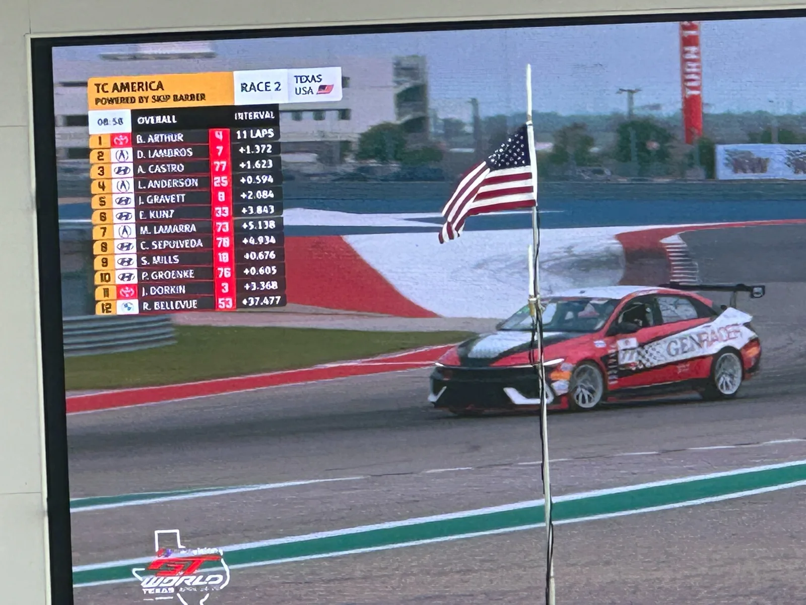
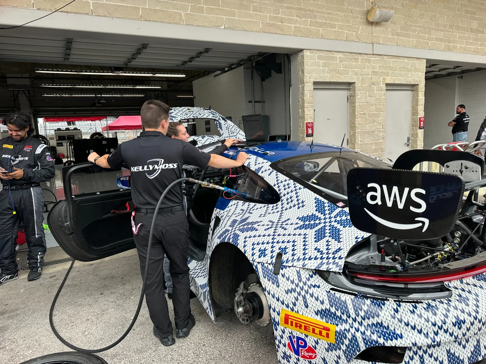
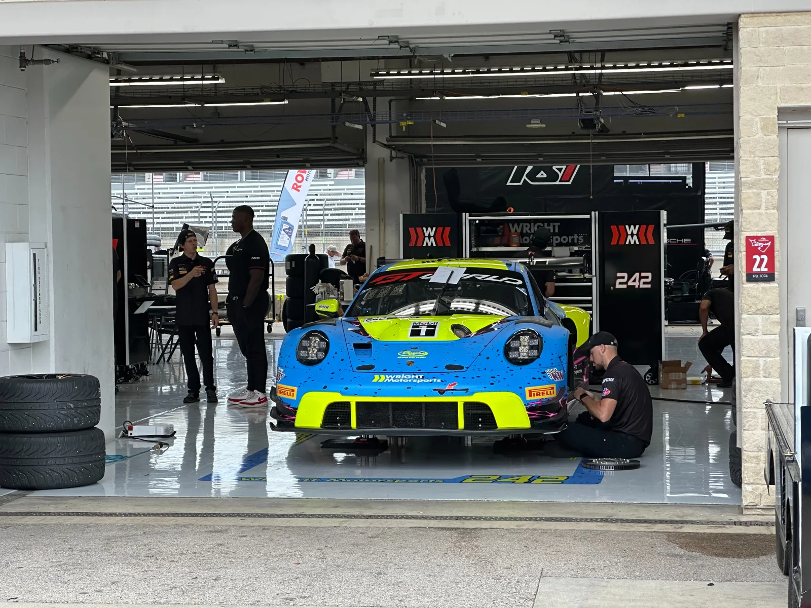
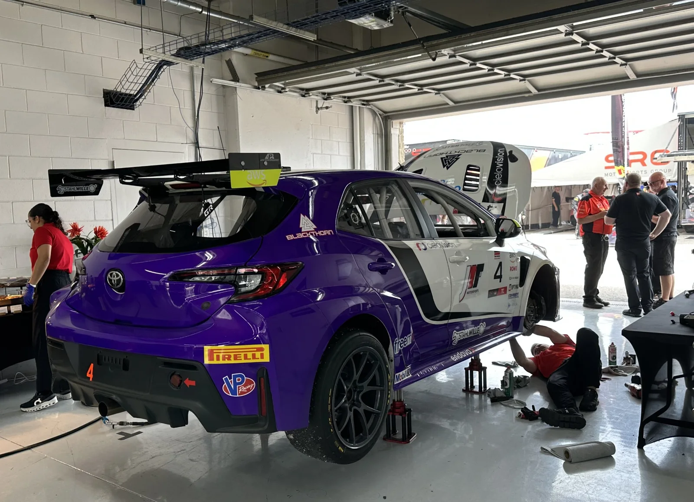
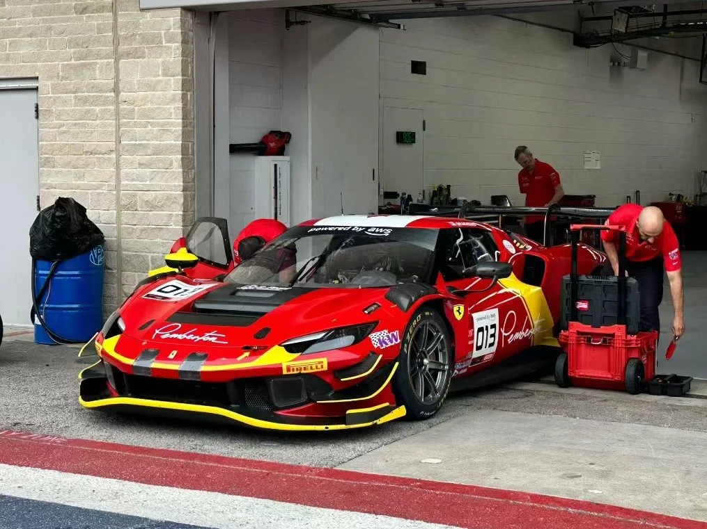
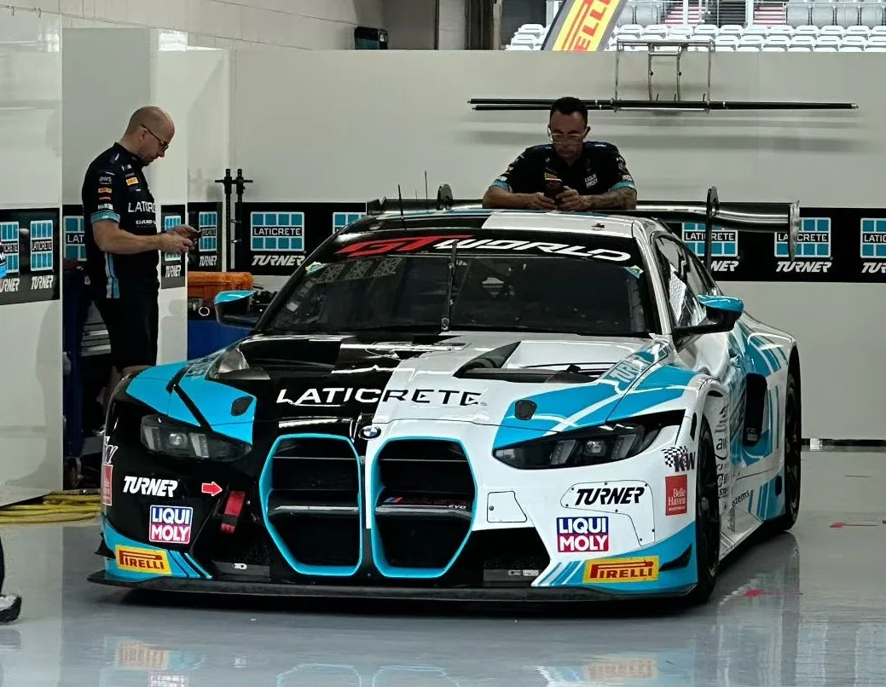
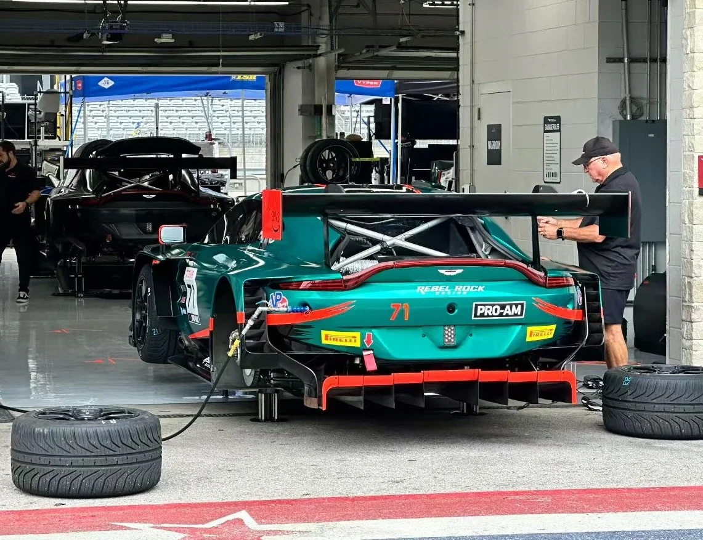
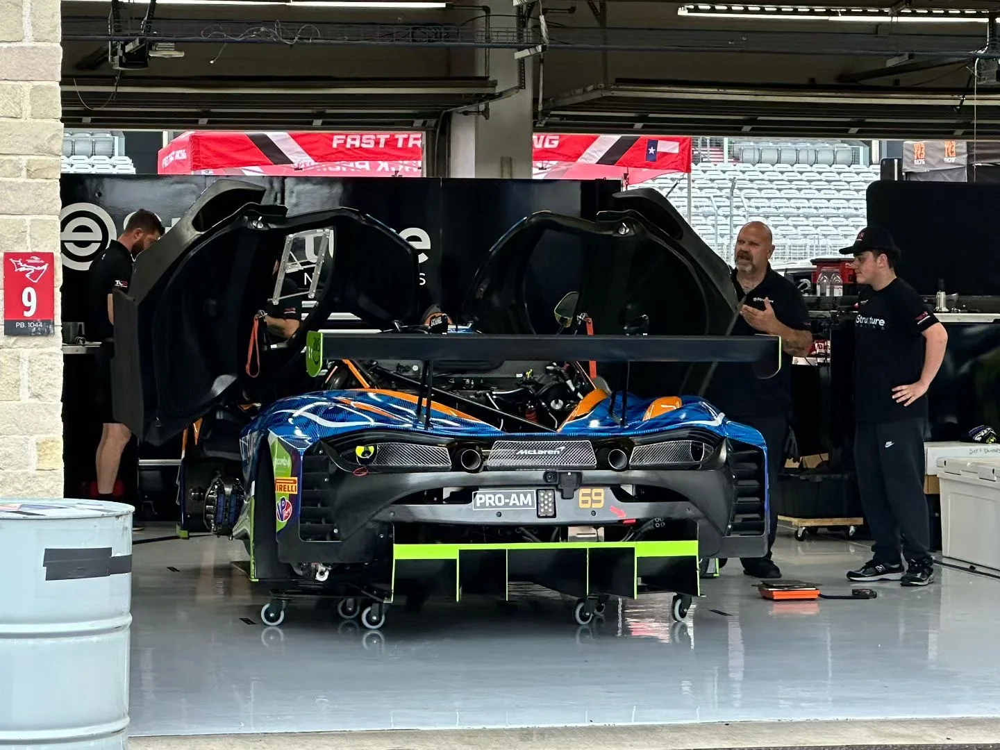
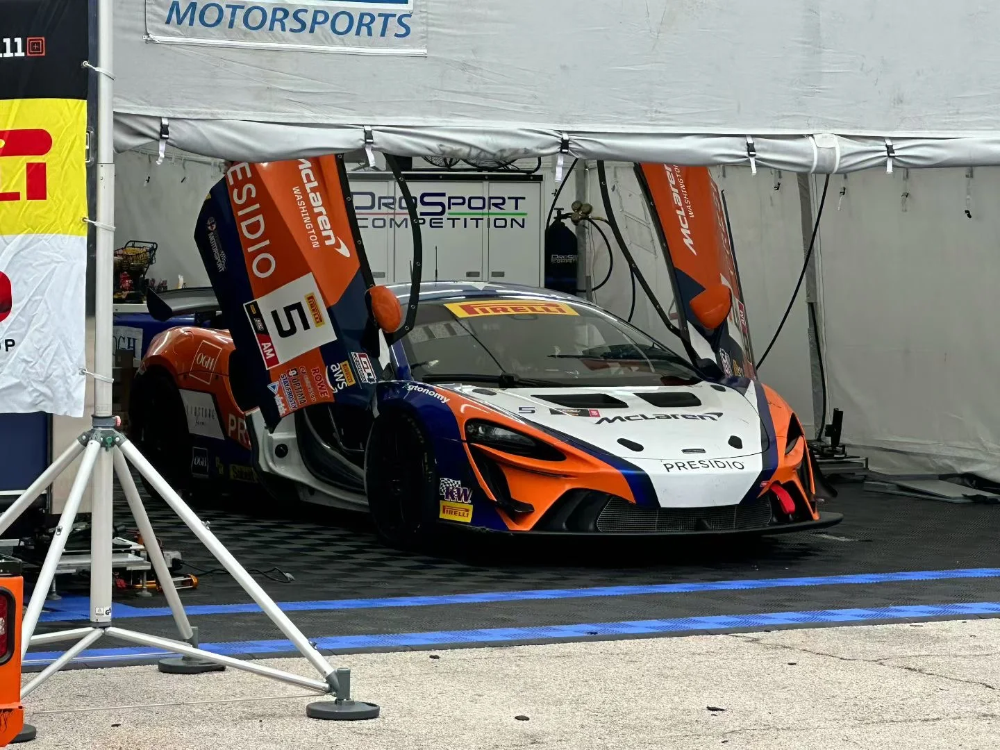
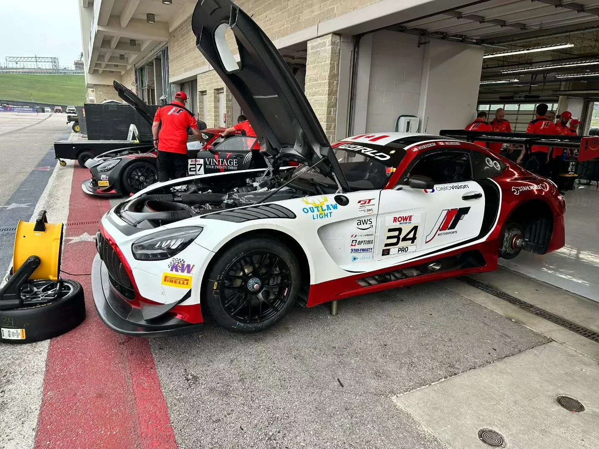
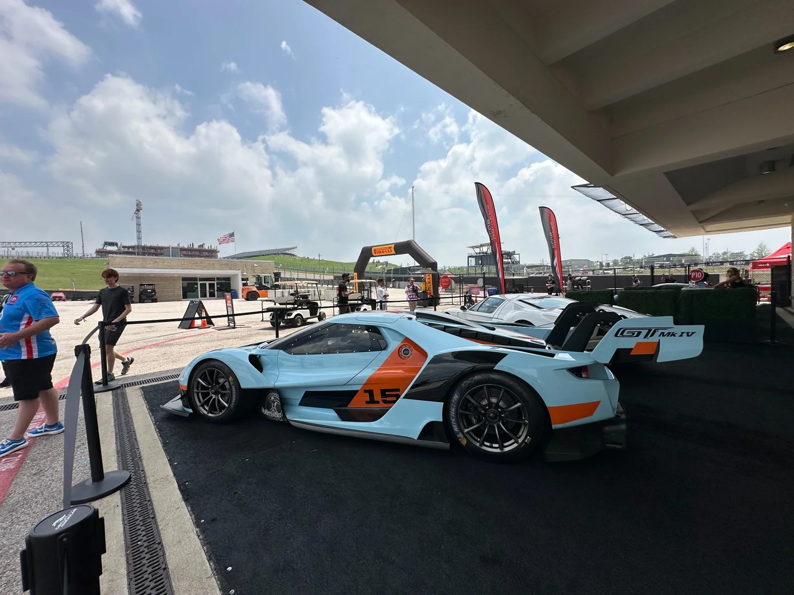
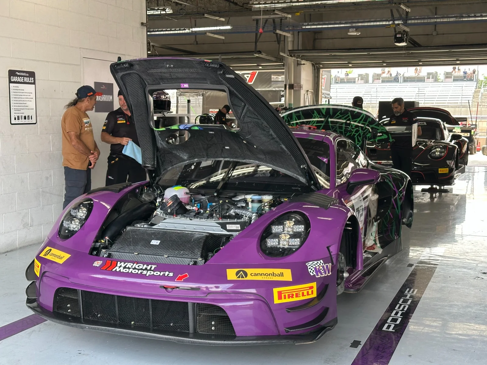
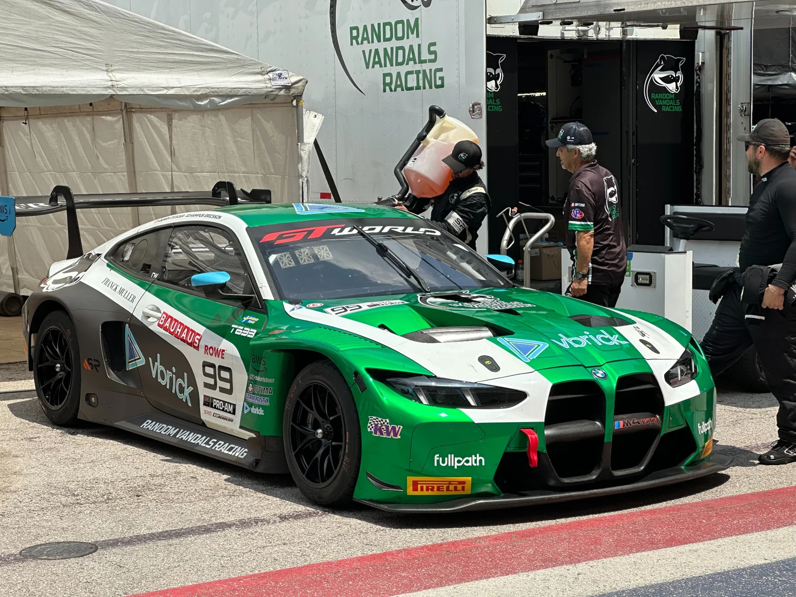
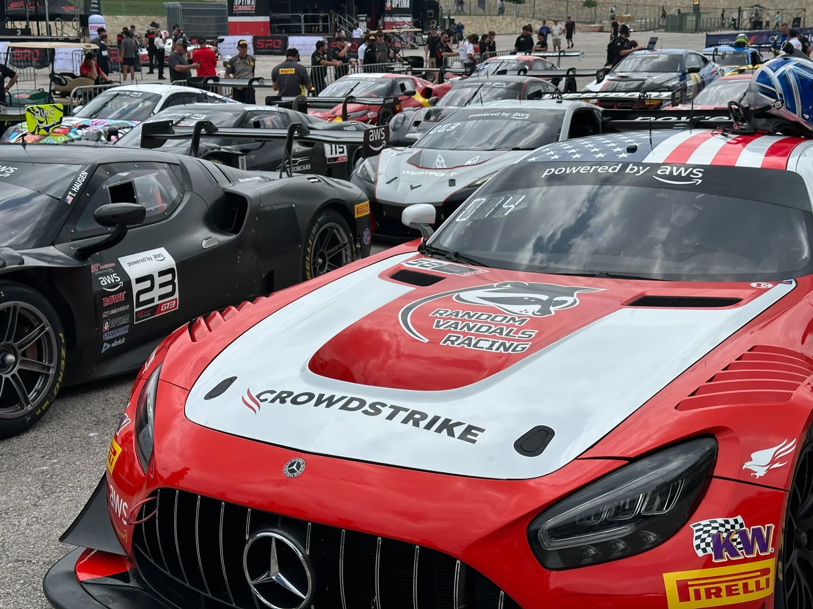
BEHIND THE SCENES / VIDEO
A closer look at race day.
Additional photography will be added as the collection develops.